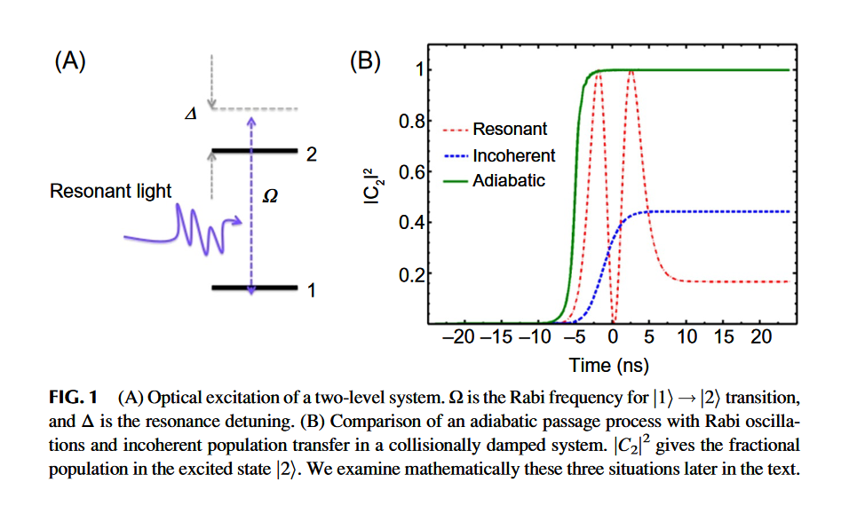
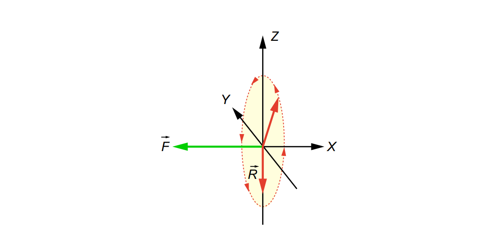
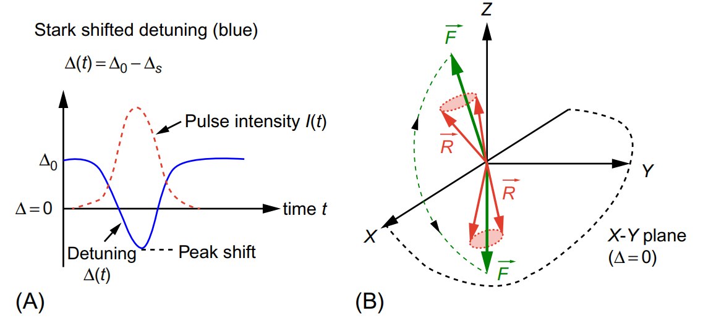
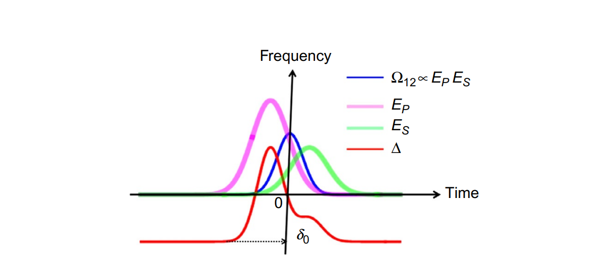

To perform a fully quantum mechanical study if inelastic and collisions in a laboratory setting need to prepare a large population of target molecules in a single vibrational (κ), rotational (J), and magetic (M) quantum state.
How Can a Large Ensemble of Molecular Targets be Prepared in a Selected Highly Vibrationally Excited Quantum State With Rotational (J, M) Quantum Number Precision?
To obasrve single colliision0-free ambience of a dilute molecular gas or in molecular beam.
Optival methods:
Raman scattering
Franck-Condon pumping
emission pumping
chirped pulse infrared ladder excitation
Raman adiabatic pumping

Fig. 1 describes three typical situations where the ground and excited states are optically coupled by single or multiphoton resonance interaction represented by the coupling strength Ω.
Resonant: the familiar Rabi oscillations
Incoherent: the presence of collisional damping
Adiabatic: an adiabatic passage process
Rabi oscillations in a consistent manner need to precisely control the frequency and energy of the pulse
Stauration of Raman Pumping in a High-Pressure Gas Cell
ρ12=(Δ−iγ2Ω12)w
w(t)=w(0)exp[−4∫0t(Ω122/γ)dt]
w(t=0)=−1/2 in the absence of Raman pumping.
Bloch Vecrot Model for Stark-Induced Adiabatic Passage
dtdR=F×R
R=[Re(ρ12),Im(ρ12),w], F=[2Ω12,0,−Δ]
Bloch-Feynman vector model for the Stark-induced adiabatic passage process. The Bloch vector R represents the molecular state, while the field vector F refers to the combined optical field of the pump and Stokes pulses that drive the Raman transition. In the pseudo space, the Z-component of the Bloch vector R refers to population inversion between the initial and final vibrational levels. Note that as the Raman detuning Δ changes due to the light-induced Stark shift, the Z-component of F passes through the X-Y plane of the pseudo space and reverses the sign. If R spins around F fast enough and F changes slowly enough, R will be able to follow F, eventually also inverting along Z. Inversion of R along Z corresponds to inversion of population between the initial and final vibrational levels. This is adiabatic population inversion.
dtd∣F∣∣F∣1<∣F∣(19) dtdΔ<2πΩ122(20)
Rabi Oscillatins
Im(ρ12)=−21sinΩ12tw(t)=21cos(Ω12t)(21)

Rabi Oscillations of population and Tanman cierence between te inintial and traget vibratinal levles as described by the rotatino of the Bloch vector R around a field vector F whose direciton remains constant(along the X-axis of the pseudo space). The rottation of Block vector R takes place in Y-Z plane of thhe pseudo space.
Coherent Population Return is a Problem for Stark-Induced Population Transfer
Δ≈δ0−ΔAC(22)
ΔAC=ℏ(α2−α1)[∣EP∣2+∣ES∣2](23)

(A) Time dependence of the resonance detuning Δ(t) (solid) as the light-induced Stark shift changes with the pulse intensity I(t) (dashed). With an initial detuning Δ(t=0)=Δ0, the net detuning Δ(t) passes through zero, which corresponds to resonance, twice as the pulse intensity rises and falls. (B) The field vector F swings across the X-Y plane every time the net detuning goes through resonance, that is, Δ=0. If the Bloch vector R stays coupled to the field vector by strong Rabi frequency Ω, then the Bloch vector also swings back and forth following the field vector. Swinging of
the Bloch vector across the X-Y plane represents population inversion. Thus, an even number of crossings results in zero population transfer. This is coherent population return.
How Do We Accomplish Stark-Induced Adiabatic Passage Using Pulsed Excitation?

The dynamic detuning Δ (red) and Rabi frequency Ω (blue) in the presence of a delayed sequence of a strong pump pulse (purple) partially overlapping with a weaker Stokes pulse (green). The Rabi frequency Ω is strong only at one of the two zero-crossings of the detuning Δ, thus ensuring
unidirectional flow of population from the initial to the target level.